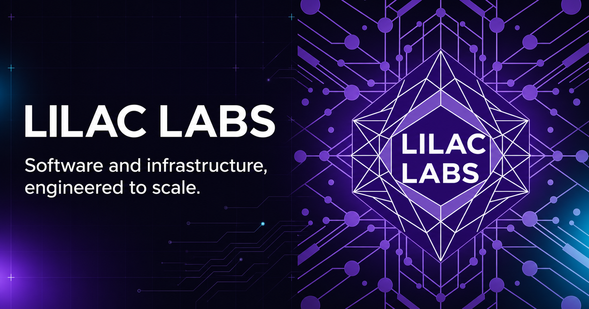

01
Product
iOS App Development
Purpose-built native experiences for Apple platforms, from product architecture through implementation.
Software / Infrastructure / iOS
Lilac Labs designs native applications and resilient compute systems across platforms—built for clarity, efficiency, and long-term operation.

01 / Capabilities
From the interface in someone’s hand to the systems working behind it, we build dependable software across the stack.
Product
Purpose-built native experiences for Apple platforms, from product architecture through implementation.
Systems
Secure, decentralized, and operationally resilient compute infrastructure designed for real-world use.
Platforms
Consistent, maintainable systems that work cleanly across environments without compromising the experience.
Direction
Practical guidance on software and hardware architecture, implementation choices, and delivery strategy.
02 / Approach
Good technology is more than a polished interface or a powerful backend. It is the way every layer works together under real constraints.
Lilac Labs combines product thinking with deep systems experience to create software that is focused, maintainable, and ready to operate.
Define the problem, remove unnecessary surface area, and make the right tradeoffs visible.
Design for the realities of performance, security, maintenance, and change from the beginning.
Create strong foundations that can grow without turning simple products into complicated systems.